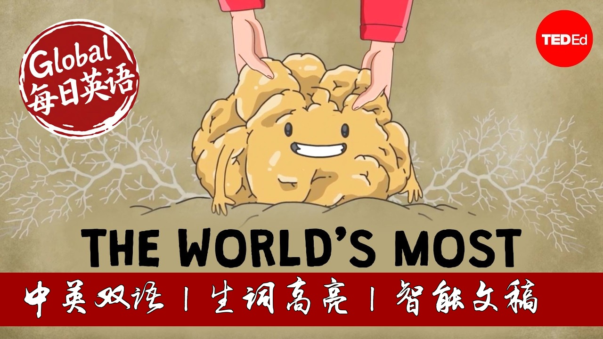

【TED科普：白松露为什么能卖出天价？】
Summary: In 2007, a record-breaking white truffle sold for $330,000, highlighting their status as one of the world's most expensive foods. Truffles are rare due to their specific growing requirements, symbiotic relationships with certain trees, and subterranean growth that relies on animals for spore dispersal. Their powerful aroma, crucial for attracting animals and human desire, comes from complex volatile compounds. Despite attempts at cultivation, truffle farming remains highly uncertain because the fungi's reproductive process is not fully understood, and environmental factors are difficult to control. Deforestation and climate change further threaten wild truffle populations, increasing their rarity and cost.
摘要： 2007年，一块破纪录的白松露以33万美元天价售出，彰显了其作为全球最昂贵食材之一的地位。松露的稀缺源于其苛刻的生长条件、与特定树木的共生关系以及依赖动物传播孢子的地下生长特性。其浓郁香气由复杂的挥发性化合物构成，既能吸引动物，也令人类着迷。尽管已有人工培育尝试，但由于松露的繁殖机制尚未完全破解且环境因素难以控制，商业化种植依然充满不确定性。森林砍伐和气候变化进一步威胁野生松露种群，加剧其稀有性和价格攀升。

⏱️ Estimated Reading Time: 7 min.
📚 四级生词 📚 六级生词 📚 雅思生词 📚 托福生词 📚 专八生词 📚 SAT生词 📚 考研生词 📚 GRE生词
In autumn 2007, a Tuscan father and son unearthed one of the largest white truffles ever found.
It later sold at auction for a record-breaking $330,000— more than six times the price of its weight in gold at the time.
Truffles are one of the world’s most expensive foods— in part because global demand often outstrips supply.
But why are truffles so rare?
And why don't we just farm more of them?
The answers lie in the truffle’s unique and somewhat mysterious biology.
Truffles refer to nearly 200 species of fungi, of which around 30 are used in commercial trade.
The most sought-after truffles are native to Europe, confined to regions with lime-rich dry soil and light summer rains.
Each species grows under the canopy of specific trees, where they form tight symbiotic relationships.
A truffle’s mycelium, the vegetative root-like structure of the fungus, wraps itself around the tree roots and swaps water and nutrients for sugars.
While truffles themselves aren’t mushrooms, the parts of truffles we covet are, like mushrooms, the fruiting body of the fungus.
But while mushrooms grow above ground, allowing their spores to be dispersed by both wind and foraging animals, truffles grow entirely below the soil.
So, they release a powerful aroma to lure hungry forest animals to come to do their spreading.
If these animals happen to drop these spores near the roots of a particular type of tree, only then might a truffle develop, several years later.
This pungent aroma is also what’s made truffles alluring to humans.
In fact, much of what we perceive as truffle flavor comes from its unique scent.
A single species typically emits 30 to 60 different volatile compounds, which are produced by both the truffle and the bacteria and yeast that colonize them.
But despite their scent, finding these subterranean gems within a dense forest is far from easy.
As early as the 1400s, Europeans used pigs as truffle-finding companions.
Truffles emit dimethyl sulfide, a compound that reeks of cabbage, which helps draw the pigs in.
But when a pig finds a truffle, they’re apt to take a bite out of the profit.
So many truffle hunters began replacing pigs with dogs who, while not natural-born truffle hunters, are more easily trained.
Meanwhile, others learn to track their prize by following species of flies that are known to lay their eggs near truffles.
Nevertheless, today, the global market still demands more truffles than any pig, dog, or fly can sniff out.
And truffles continue to grow even rarer— and more expensive— as deforestation and climate change shrink their suitable terrain.
So why don't we just farm them?
We do, to some extent.
In 1808, a French farmer became the first to cultivate truffles when he planted acorns under truffle-bearing oaks, and then transplanted the seedlings with— unknowingly at the time— some fungi companions.
By the early 1970s, scientists cracked how to artificially inoculate tree seedlings, which allowed growers to sow certain species of truffles in orchards far outside their native range.
However, truffles are still not considered a domesticated crop.
There are just too many unknowns, as researchers are still working out the precise temperature, precipitation, elevation, soil pH, and other environmental factors that determine a truffle orchard’s success.
Part of the problem is that truffles need to mate to form that valuable fruiting body, yet truffles sex is still largely a mystery.
Researchers know that these fungi are hermaphrodites that cannot reproduce alone.
So, when a truffle reproduces, one fungus takes on the maternal role and the other the paternal role, each contributing half of the genes that will form the spores.
However, when researchers search the area near a truffle fruiting body, they only ever find maternal mycelium.
Where the paternal partner lives— or hides— remains unknown.
So each time a hopeful truffle enthusiast begins a new farm, there’s no guarantee truffles will grow, and they'll have to wait four years or more to find out.
But many take the gamble, as growers know that if they’re patient and lucky, they might just dig up gold.